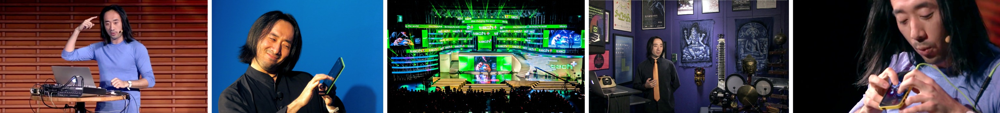

王戈 | 演讲人资料
王戈中文或英文演讲新科技与创新，创造力，多媒体，产品设计，新网咯社交，人类与科技的
关系和未来；包括很多现场新科技音乐和多媒体表演和演示。
也会为每地不同的观众特殊加工。同时连接科学界，艺术界，学术界，和商业界。保证动听，出色，鼓舞人心。
本名：王戈
英文名：Ge Wang
出生地：北京
生日：1977年
网站：http://www.gewang.com/ (英文）
专家顾问: 简历 (英文)
现居住地：美国，旧金山，斯坦福大学
职业：发明家，设计师，美国斯坦福大学教授，Smule 创始人，计算机音乐研究专家顾问。
学历：普利斯顿大学博士（Ph.D.)，杜克大学学士(B.S.)
发明：
- ChucK（音乐程序设计语言)
- 陶笛 (Ocarina, iPhone app)
- 魔法钢琴 (Magic Piano, iPhone app)
- 斯坦福笔记本乐团 (Stanford Laptop Orchestra)
- Smule (移动音乐公司)
个人介绍：
|
王戈是计算机音乐发明家和设计师。他是斯坦福大学的教授。
他于2008年普林斯顿大学获计算机博士学位, 2000年从杜克大学获本科学士学位，
王戈致力研究与开发声音程序语言和互动音乐软件系统，
移动和社交音乐，笔记本和手机乐团，音乐视觉以及在计算机
和音乐方面的教育的应用。王戈是ChucK音乐程序语言的发明者和主要工程师。
他还是斯坦福大学笔记本和移动手机乐团的创立人。
王戈还是移动音乐创业公司Smule的创始人和首席创意官。
王戈设计的iPhone手机程序陶笛和魔法钢琴应用已经拥有了超过一亿用户。
|

最近大规模演讲:
- 中央电视台 (2015 正在拍特色节目, 在七八月全国播放
-
 (2014, 一百万人观看) |
演讲视频 (多语言) |
演讲视频 (下载) (2014, 一百万人观看) |
演讲视频 (多语言) |
演讲视频 (下载)
- 中央电视台《一人一世界》(2015) :
央视网 |
照片
- 美国国会图书馆 (2013)
- 腾讯产品家 (2013, 北京，主题演讲)
- 移动卡发者大会中国 (2012, 北京，主题演讲, 产品设计大师班)
- 韩国文化部全国论坛 (2012, 2011, 首尔)
每场主讲费:
- 演讲／主题演讲：请来电详谈
- 电子音乐表演会：请来电详谈
- 产品设计大师班(企业）：请来电详谈
|